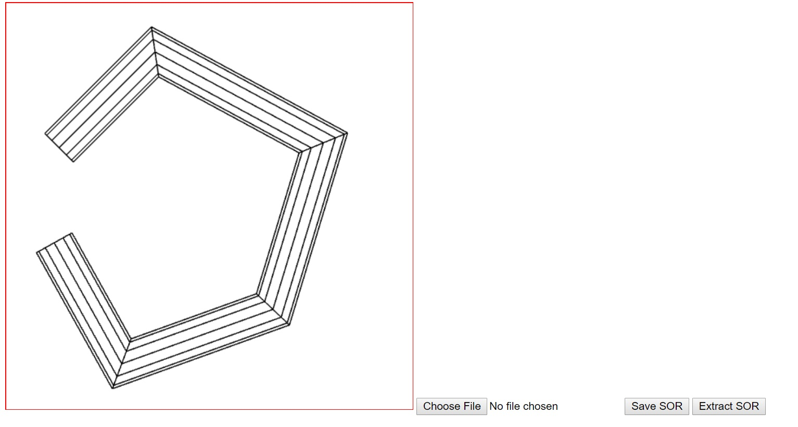

Name: Stephen Woodbury
Student ID: 1429496 : swoodbur
Submission For: Prog1
Date: 10/15/2017
Files Included: WoodburyStephenProg1Features.html, WoodburyStephenProg1Driver.html, WoodburyStephenProg1Driver.js, WoodburyStephenProg1Output.jpg
Assignment Details: To generate a spine, which is like generating a polyline in lab1. Once done with the spine, generate a cylinder.
Additional Features: The program functions as specified. There are no disjoint cylinder junctions. There is a basic prototype version of generation of normals. It is not fully tested or implemented so consider normal generation a work in progress. If you'd like to see the prototype, uncomment line 389 of WoodburyStephenProg1Driver.js. Normal generation is disabled by default.
Notes: I added several helper functions under Helper Functions in WoodburyStephenProg1Driver.js . The functions you should not consider for grading are: generateNormal and enableNormals. These functions are related to generating normal vectors and are still under development. IMPORTANT: I'm assuming the graders will have a copy of ioSOR.js in directory, the local directory. There were no instructions otherwise on if we need to turn in a version of ioSOR.js or if it was a file located where lib is. So I assumed it was in the local directory with the Driver files.
ScreenShot of Output: WoodburyStephenProg1Output.jpg
Link to Driver : WoodburyStephenProg1Driver.html